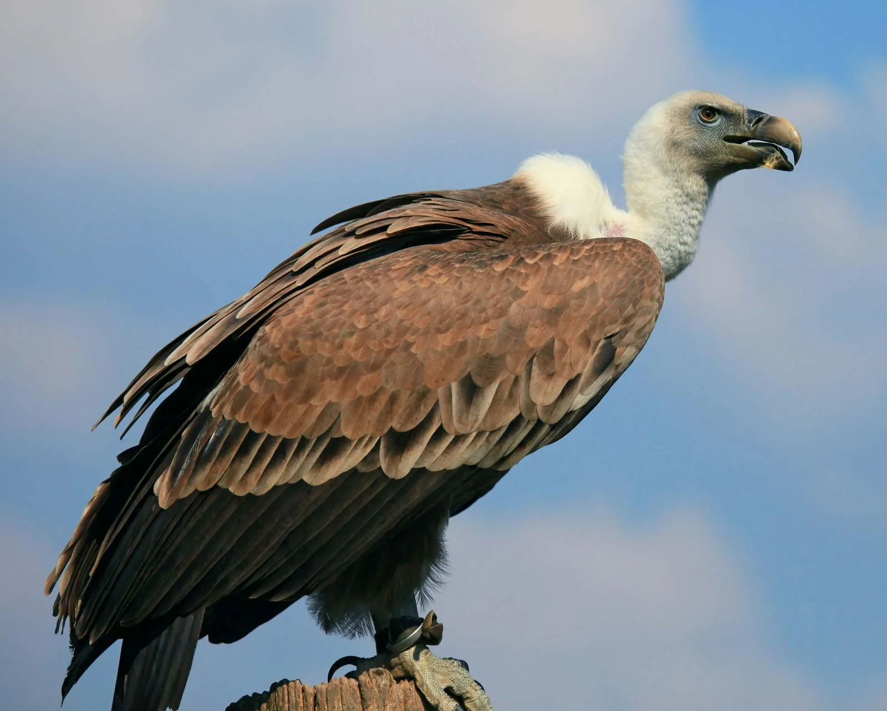

Vulture
Scavenging birds that help keep ecosystems clean.
- Species: Accipitridae
- Diet: Carnivore
- Size: 2-5 ft wingspan
- Weight: 5-30 lbs
- Life span: 10-30 years
- Habitat: Plains, deserts, mountains
- Found: Worldwide
- Can be pet: No
Trivia: Vultures can smell carrion from miles away.